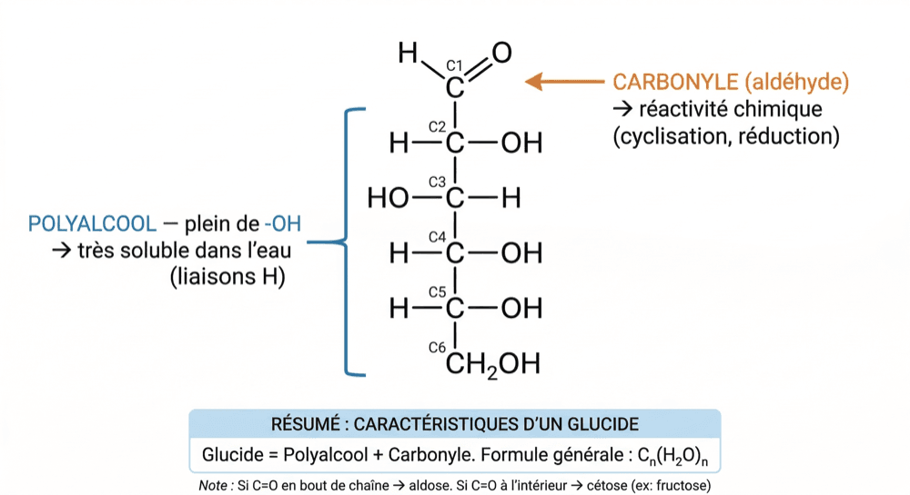
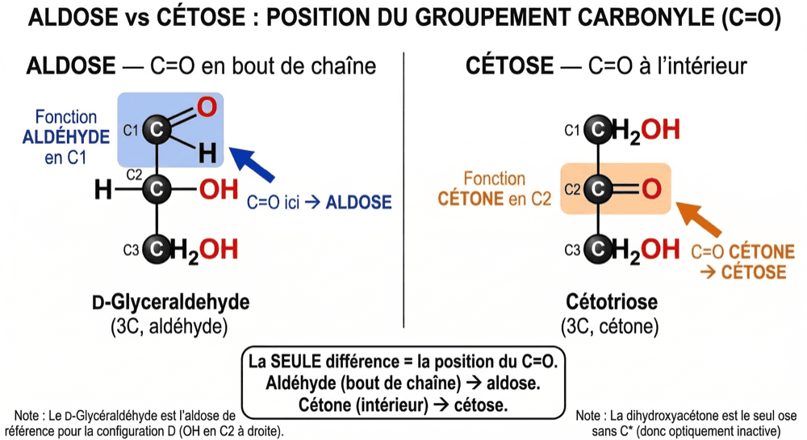
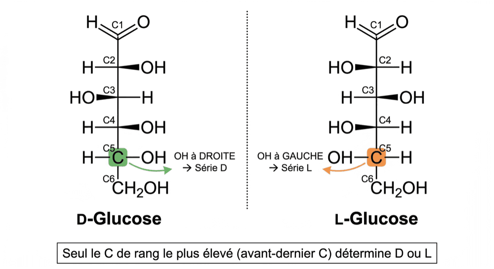

Aldose, cétose et série D/L en projection de Fischer
Un glucide, c'est juste plein de −OH + un C=O.
Et la série D ou L se lit sur un seul carbone.
Tu connais déjà les alcools (−OH), les aldéhydes (−CHO) et les cétones (C=O). Un glucide (= saccharide = sucre), c'est simplement la combinaison des deux : une chaîne de carbones portant plein de −OH, plus une seule fonction C=O. Autrement dit un polyalcool + un carbonyle. Définition officielle : un dérivé aldéhydique ou cétonique d'un alcool polyhydroxylé. Cette double identité explique tout : les −OH font des liaisons hydrogène avec l'eau (donc très soluble), et le C=O donne la réactivité (cyclisation, réduction). Formule générale approchée : Cn(H₂O)n — d'où le vieux nom « hydrates de carbone ».

Le D-glucose, ose de référence — d'un côté les −OH (polyalcool), de l'autre le CHO en C1 (carbonyle).
- 1 Trois familles, une question de taille. Les monosaccharides (= oses) sont 1 seule unité, non hydrolysable : glucose, fructose, ribose. Les oligosaccharides font 2 à 10 oses reliés : saccharose, lactose, maltose. Les polysaccharides font plus de 10 oses, souvent des milliers : glycogène, amidon, cellulose.
- 2 Aldose ou cétose ? Regarde où est le C=O. S'il est en bout de chaîne (C1), c'est une fonction aldéhyde → aldose (ald·éhyde → ald·ose). S'il est à l'intérieur (C2), c'est une cétone → cétose. Le plus simple des aldoses : le glycéraldéhyde (3C). Le plus simple des cétoses : la dihydroxyacétone (3C), seul ose sans carbone asymétrique, donc le seul optiquement inactif.
- 3 Le nom donne aussi le nombre de carbones. 3C = triose, 4C = tétrose, 5C = pentose, 6C = hexose. On combine les deux étiquettes : le glucose est un aldohexose (aldéhyde + 6 carbones), le fructose un cétohexose, le ribose un aldopentose.
- 4 Série D ou L : un seul carbone décide. En projection de Fischer (chaîne verticale, carbone le plus oxydé en haut), regarde le −OH porté par le carbone asymétrique de rang le plus élevé, c'est-à-dire l'avant-dernier carbone de la chaîne. OH à droite → série D. OH à gauche → série L. Les oses naturels sont majoritairement de série D.
- 5 Trois mots à ne jamais confondre. Énantiomères = images miroir, tous les carbones asymétriques inversés (D-glucose ↔ L-glucose). Épimères = un seul carbone asymétrique change de côté (D-glucose ↔ D-mannose en C2, D-glucose ↔ D-galactose en C4). Diastéréoisomères = stéréoisomères qui ne sont pas images miroir ; les épimères en sont un cas particulier. À retenir aussi : le glucose, aldohexose à 4 carbones asymétriques, possède 16 stéréoisomères (8 D + 8 L).

La seule différence — la position du C=O : en bout de chaîne, ou à l'intérieur.

D-glucose et L-glucose — un seul carbone à regarder : l'avant-dernier.